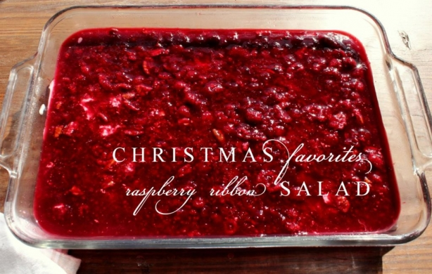
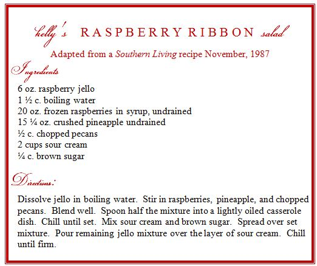
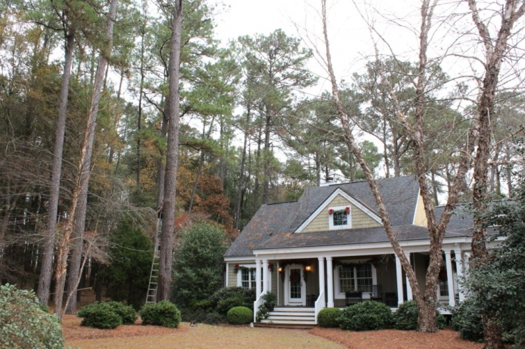

.png)
.PNG)
.PNG)
.PNG)
.PNG)
.PNG)
.JPG)
.JPG)
.PNG)
.PNG)



Do you have a recipe that is your signature dish…you know, the one everyone says that you will be responsible for bringing to the family get-togethers? I want to share “Kelly’s salad” with you today. Whenever we have a covered dish anything between Thanksgiving and New Year’s Day, this is often what I make, and I have been making it since 1987 when Southern Living featured it in their November issue. (Yes, that long.) Do you know how some smells or tastes take you back to places in your memory? Whenever I taste this salad, it tastes like Christmas to me. (The smell of tangerines does that to me, too.)

In the original recipe, Southern Living called for making it in many layers. When unmolded from a gelatin mold, it made for a beautiful presentation. But goodness, it took a long time to make! So over the years I simplified it down to making one layer. Let it set. Add the sour cream layer and then the final jello layer. Much easier. The Southern Living recipe also did not call for any sugar to be mixed with the sour cream. I felt like it was a little too tart without it, so I add in some brown sugar to tone that down. (My mother still thinks it is too tart, but my oldest son and I love it.)
In the news here this weekend, the large pine with the ladder leaning against it came down yesterday (with no injuries to anyone or anything. Hallelujah!)

And this beautiful evergreen got all dressed up in her Christmas attire.

And just a reminder for you that this is the last day to leave a comment on any of the Christmas Favorites posts to be entered in the drawing for a $25 Williams-Sonoma gift card. The contest is open until midnight tonight (12/8/13) and yes, you may enter more than once by leaving a comment on more than one of the posts (but only one comment per post, please.)
I want to leave you with a sneak peek of the Christmas tree decorations. If the sun will ever come out, blind girl here will take photos to show you the entire tree (and room!) this week. Yes, that is tinsel you see there! 🙂
And I will leave you with a question to get you started with a comment for entering the drawing.
Do you have a signature dish? If so, we would love to know what it is.
Looking forward to hearing from you on this rainy December day!

***giveaway has closed***


.PNG)
OH…I get it now…if they aren’t clickable…they don’t have a blog. Carry on 🙂
I read all these comments and had fun…I wish I could click on their names and go to their blogs…is there any way you can enable that?
Ooo, your salad sounds wonderful, too! I’m sure I’ve never had it.
Wish we could have a potluck and have all these people bring these things so we could taste! We’d have to wear our elastic pants, right? Spinach souffle…mercy..sounds good!
My signature dish is apple pie! My nephew would be very disappointed if I didn’t make him one. I gave him one for Christmas when he was 12. After Christmas, his teacher had them write a paper about their favorite present. he wrote about my pie! One proud aunt here! I love tinsel on the tree, although I didn’t use any this year. I tied raffia bows to get the “hanging” look I like. Posting pictures hopefully tomorrow. I’ve been waiting for the rain and clouds to go away to get some good pictures.
Kelly,
I can’t wait to try your salad. I have a potato salad that I have become famous for. Everyone just loves it; potatoes, mayo, salt and pepper, red onions and cottage cheese. Sounds strange, but it is a real winner.
Bobbie
Too late for the giveaway, but that’s okay. I am the Caramel Pecan Roll maker around here. Family can’t seem to have Christmas without them! At our old house, I made the mistake of giving them out to our neighbors one year, and afterwards, they always asked when they would be arriving! I ended up making way too many batches for too many years!
I DO have a signature dish for Christmas — and I’ve told a lot of people about it lately, so forgive me if I’ve mentioned it here before. My family likes me to bring dessert on Christmas. Actually, it’s just one item in a dessert feast, but everyone always enjoys my Peppermint Patty Brownies. You can find the recipe here: http://sally-drinkingfrommysaucer.blogspot.com/2011/12/tradition-peppermint-patty-brownies.html Your raspberry ribbon salad looks and sounds amazing. Thanks for sharing the recipe Kelly!
I am definitely making your Christmas Raspberry Salad this Christmas. LOve your Blog
Great recipe. I love to cook and I was thinking about what recipe that defines me, I guess my banana pudding would be the one. Can’t wait for the pictures of your tree…..love, love you house.
I make a good brown rice with mushrooms for special occasions…by popular demand! Hope the next couple school days will be stress free for you!
I thought of you this week when I made a trip to Fresh Market to buy some of those yummy gingerbread men! My son & I will have fun decorating them ~ & eating them (maybe will share a few!)!!
Merry Christmas,
Paula
I can’t say I have a signature dish yet but I hope that with enough cooking and trying new recipes I’ll find one!
Kelly,
I don’t think I have a single signature dish, but your jello dish looks s
Delicious and I’ve had something very similar…yummy.
Did the tree fall down? It looks like it will be a beautiful Christmas tree.
This is such a fun time of year.
xo,
Karen
Just popping into,the com box to say Merry Christmas! We are under several inches of ice and have been housebound for 3 days. Another tomorrow! I am going to have to try that salad. Looks wonderful!
Love your recipe! My signature dish is apple dumplings made with orange juice,
Thanks for the chance to win!!!
I cannot wait to see the rest of your tree. 🙂
Tinsel sure takes me back to my childhood. How fun!
Not sure I have a signature dish, but I do get rave reviews for my
fried chicken.
Hi Kelly…. me again
Looking at your recipe for ribbon salad I have 2 questions:
what size dish do you use and how do you keep the jello mixture for the second layer from setting while you wait for the first layer to set? Thanks!
———————————————————————–
Hi Martha!
Good questions! I use a 9 1/2 X 13 1/2 in. casserole dish, and I leave it out covered on the stove (with the burner off) until the first layer is set (or partially set).
Kelly
Kelly, I can’t wait to see the complete unveiling of your tree. After 40+ years of live trees. we broke over and put up an artificial tree this year. I am using live greenery for decorating though.
Your raspberry salad sounds wonderful. I make a similar one with strawberries. For holidays, one of my signature dishes is a cranberry apple crunch (almost like a dessert) with an oatmeal, brown sugar, pecan, and butter topping.
Always look forward to your posts…….
My signature is a bay blue salad. Lots of steps but loved by all and worth the effort!!
My signature dish is a broccoli casserole. Even the little ones like it!
Don’t you just love Southern Living recipes from back in the day?! Yours looks tasty and your tree looks like it will be beautiful! Williams Sonoma is one of my favorite stores, so! Of course I would love to win!!
Can’t wait to see the entire tree….no signature dishes here but that dish of yours will be gracing our Christmas table.
That salad looks yummy! Think I’ll make it for New Years! And I feel the same way you do about the smell of tangerines– we always had them when I was little and that smell “means” Christmas is here! My signature dish ( my kids beg for every year) is Cherries on Snow. Have not been able to make it because I lost the recipe– but “glory” I finally found it– it is made with Dream Whip and I was concerned they no longer make that– BUT I found it at Publix!! So guess what my Christmas surprise is going to be–:) it is a no bake cheese cake — I tried it with Cool Whip but didn’t taste the same-topped with cherries! The real name is “cherries in snow” that was why I had a hard time finding it on google.
I make a great gooey butter cake!
It wouldn’t be Christmas without nut rolls. My family has made these my whole life and they are amazing!
Love your blog! A welcoming place for sure!
I don’t have a signature dish, but I do make a loaf of artisan bread that is a favorite. I would love to try this recipe of your’s…..looks beautiful and would add some pretty color to the table during Christmas. Your tree is huge! Can’t wait to see pictures when it’s decorated. Thanks again for the giveaway. I was in Williams-Sonoma today. Love that store!
It has been a misty dreary weekend in Georgia, but, what a wonderful weekend to decorate the house for Christmas. We have the trees in the house, yet, no decorations. The house is decorated inside and out. It is my favorite time of year. I love playing Christmas music just enjoying the season. I can’t wait to see your beautiful tree all decorated. God Bless the pine tree came down without incident.
I don’t know that I have one signature dish. My children and my family members each have their favorites that I must make every year. Red Velvet Cake is a must. I hope you and your family have a very Merry Christmas!
Yum! I’ve never had that raspberry recipe but it does look good! Everyone’s dishes sound really good! I’ve made the strawberry/ pretzel dessert and we all like that one but I was thinking of making it this year with whole berry cranberry sauce, diet cherry Jello, some orange zest and of course the pretzels, to take to our traditional family Christmas Eve pot luck dinner. Looking forward to seeing your tree decorated…looks like it’s a lovely tall one!
Your Raspberry Ribbon Salad sounds yummy! I’ll definitely give it a try. My signature dish is Cranberry Salad. It’s made with strawberry or raspberry gelatin, chopped fresh cranberries, crushed pineapple, shredded apples & chopped nuts – delicious! 🙂
I’m in denial that Christmas is here, almost! I don’t know if I really have a signature dish. I do make a coffee cake recipe that has been in my family since the 1880s. It is most unique and delicious. Old folks usually say that it reminds them of something their mothers used to make. I need to get baking!
Gosh, I don’t think I have a signature dish. I wish I did. I can’t wait to see your decorated tree!!! There is nothing like the smell of a fresh frazier fur tree!! I hope your Christmas break starts soon!!!!
Your signature dish sounds delicious, Kelly! And I love the name: Raspberry Ribbon Salad. It sounds Christmasy. 🙂
As strange as it sounds, my family is always asking me to make “my” mashed potatoes. Loads of butter, sour cream, pressed garlic, and chives with a bit of mashed parsnips mixed in…mmmmm…
Kelly, I have had the ribbon salad, but never had a trusted recipe for it.I have decided to change up my Christmas dinner and this is going to be on the menu. Every recipe of yours that I have tried has been a hit. Thanks! I am known for my potato salad and Congo bars…..I think I probably need a new name for the Congo bars, but it is what my mom called them from the 1950’s on and we just go with it. They are a blond brownie with choc chips and walnuts. My family adores them.
Tinsel!!!!!! I love it!!! I hate the way it lingers long after the tree is gone.
I love your ginger bread houses from the previous post. I just made one this afternoon with my 2 oldest granddaughters. Such fun!
I will definitely be trying the Raspberry Ribbon Salad. Sounds wonderful.
Kelly, thank you for responding so quickly about the chalk marker. I had a friend to pick one up at Hobby Lobby in SC and she is bringing it to me tomorrow…in time to letter the wedding chalkboards. (I told her where you said to look….and it was right there.)
I wish I had a signature recipe. I have been trying to find one. I can make a few things that are time consuming….like baklava and cheese braided coffee cakes; but, nothing that I can just whip up. So, instead of telling you a signature recipe, I am going to tell you what I tell one of my brothers when he asks what I brought to eat. I always say, “I don’t have to bring food, I bring great gifts.” LOL!
Lovely LARGE tree! The salad sounds yummy too! I just did a post on a tropical version of egg nog using coconut milk. Crack, I tell you!
I make a strawberry congealed salad, very similar to your recipe, that I adapted from my mother’s recipe that has been at our family Christmas dinners for many years. I love just about any kind of congealed salad! Merry Christmas!
I can’t wait to see how you decorate your tree and try your ribbon salad. Sounds delicious! I’ve had something similar, but made with cranberries. Very tart. I prefer food to be on the sweet side, so I can’t wait to try your recipe. As to a signature dish, not really since I like to try different recipes. Have you ever thought of making a cook book with all of your wonderful recipes? I keep downloading the ones you’ve shared on your blog and so far have about 5 pages worth. One of these days I’ll print it off and have a hard copy. Happy Holidays!
Kelly,
I am going to have to try your signature Raspberry Ribbon Salad! It looks divine. I usually make several batches of a snack mix that has a caramel and sea salt coating on it. It is not difficult but it takes an hour to make since you have bake and stir through out the process. It is delicious and addictive and the perfect gift this time of year. However we devour several handfuls of it sitting on the couch watching football.
Sausage bread as an appetizer at our family’s annual Christmas Eve party at my sister’s house.
Hi Kelly,
Love your blog. Can’t wait to try your Raspberry Ribbon Salad. I like to make a
Sherried Fruit recipe at Christmastime.
Sorry the tree fell but glad no one and no property was hurt!
Anne
Hi Kelly, I haven’t been much for posting lately but I’ve been reading. I finished installing the new kitchen flooring late last night and am now breathing a big sigh of relief! I’m very happy with the result! Now I’m just putting the kitchen back together and I’m really wanting to do some baking next but will hold off and get more done in the LR/DR first. Love the sounds of your recipe and I’ll jot it down and give it a try. I don’t have a signature dish per se but I guess I have some family favorites that get requested off and on depending on which one of my kids is doing the asking. I like to try new things whenever there is a potluck. I’m looking forward to seeing your tree all decked out!
Can’t wait to try your raspberry jello recipe – love the color and think it will look so beautiful on the table!
Signature item is from my childhood – in Goshen, IN, we had the nicest Amish egg lady who shared her recipe for what she called party potatoes and I’ve seen many variations of it since then but it would not be a holiday without these potatoes. Mashed potatoes with sour cream and cream cheese, whipped to perfection and then baked in the oven to a golden top. They are heaven …. and can be made a little healthier using Greek yogurt and lo-fat cream cheese (NEVER the no-fat kind!).
Kelly, your decorations and ideas never fail to inspire me — thanks for all you share with your avid readers! Hugs, Pippa
I know I will be copying down this recipe…and making it this holiday season. Thanks for sharing it with us! I love following you and love the look of your darling home.
Hi Kelly,
I would LOVE to try this recipe! It sounds delicious 🙂 And what a tree you have! I am sure the pictures will be breathtaking (as always! 🙂
Megan
My dish would be spaghetti! Recipe has been passed down for several generations! Beautiful tree BTW!!
XO
Linda
Kelly, May I join the others and tell you how much I love your blog? It has such a sweet spirit and a comfortable peace about it. Your home is beautiful and I always look forward to your post. My signature dish is deviled eggs. To a dozen hard boiled eggs I add a block of softened cream cheese and sandwich spread. A tad bit of mustard and salt and pepper. Everyone loves them and my first born grandchild, who doesn’t eat eggs, can’t get enough of them. Merry Christmas. Patty
My dish would be my blackberry wine cake or my Hawaiian meatballs.
I love the strawberry pretzel salad which I have taken to church potlucks as well as the strawberry spinach salad.
All these recipes sound delicious. I can’t wait to try this one Kelly. I love raspberries. Can’t go wrong there!
I can’t wait to see your tree decorated! I do have a signature dish….meatballs and a sweet potato casserole that is to die for!!!!
I have been decorating, listening to Christmas carols and when I noticed you had a new post sat right down for some inspiration. My blog still has fall posts, so I need to take some pictures and do a new post myself. I don’t know how you find the time to do all you do.
My signature dish is called Indian Fudge. Now I don’t know if it is politically correct in todays standards, but it was my Mom’s recipe and she was part Micmac Indian from Maine. Anyway it is cranberries, golden raisins, nuts, chocolate and I have mailed it to my son whenever he was deployed because it wouldn’t be Christmas or Thanksgiving with out it. It brings me wonderful memories of cooking with my Mom.
I can’t wait to see you tree all done.
Hugs,
Donna
Gee! I think we need to get a little recipe exchange going here! All of the yummy cookie recipes, and now the ‘signature dishes’–makes me feel Christmas-y! My dish is sort of a Cranberry Applesauce: fresh cranberries, diced apples, orange peel, a touch of cloves, cinnamon. It’s especially good at this time of year. We think it tastes like Christmas!
Kelly, I’m sitting at the farm table, snow finally falling outside and taking time to enjoy your sweet blog. I have never had the Raspberry Ribbon Salad, though it sounds and looks wonderful. I enjoyed your Hot Christmas Punch, so I will need to try this one as well. My salad that I would bring for holiday was the Strawberry pretzel jello. Probably quite a few of your followers are familiar with it. I have to share too, a recipe that everyone always loved from my husband’s side. It was the “Cookie Pudding”. Do you know that one? It is made with caramelized evaporated milk, whipping cream and vanilla wafers. It is so rich and delectable. It was always served with the cookies. Oh, now you have my mouth watering and memories of my in-laws, whom are now no longer with us. You stirred my senses in a good way Kelly. Thank you. Have a wonderful week ahead.
Debra
We must be kindred spirits ! I have a cranberry jello salad recipe my mother-in-law gave me close to 40 years ago that is definitely my signature dish. I use cherry jello, ground cranberries, ground apples, crushed pineapple, and walnuts. It has such a wonderful taste! Can’t wait to see your beautiful tree all decorated. Take care, Lindy
I make a cranberry salad for Thanksgiving that is yummy!
Kelly…I have had that ribbon salad before…and it’s delicious! I love that you used tinsel….so many memories! Waiting to see more! 😉
You can never have too much tinsel or too many twinkle lights. Looking forward to your next post. My signature dish would be Strawberry Pretzel jello. Pretzel, butter, sugar base. Cream cheese, vanilla & sugar layer then strawberry jello. It makes an appearance every Christmas and there is never any left.
I will try this recipe soon. We make a strawberry Jello salad with sour cream in the middle.
I was wondering what decorations you were going to put in the tree.. And I’m Glad your tree made it inside!
I really enjoy your blog and get lots of decorating ideas from it,. Thanks for sharing and for the chance to win!
Kelly’s Raspberry Ribbon Salad looks great! I make a raspberry salad at Thanksgiving but this is a must-try recipe!!
let me first say I don’t think anyone needs to worry about me EVER moving to Atlanta….that traffic about did me in!
I love that raspberry recipe and will sure be adding it to my list of “things to make”. I have several recipes that are my signature and favorites of family members. I wrote a post about my blueberry delite salad a few years ago and will send you the link and story behind it.
I just showed my husband the outside of your house….it’s so pretty and the setting is perfect. can’t wait to see all your pretty decorations.
This is similar to something we make except we use the Jello cheesecake instead of sour cream.
I really want your house. 🙂 I just love the outside and inside and no grass.
Kelly, the Raspberry Ribbon salad sounds so good I think I will make it at Christmas. What size dish do you use since you are just doing the one layer?
I would have to say my signature dish would be Spinach Souffle.
It is my Aunt Callies recipe from my Daddys side but I always make it for our family when Aunt Callie will not be with us. Everyone loves it!
Lynne
This recipe has taken me back about thirty years(seems like just a few!) when I made something similar for a potluck and became an instant hit. Thanks, Kelly for your inspiring photos and giving us a peek into your warm and beautiful home.